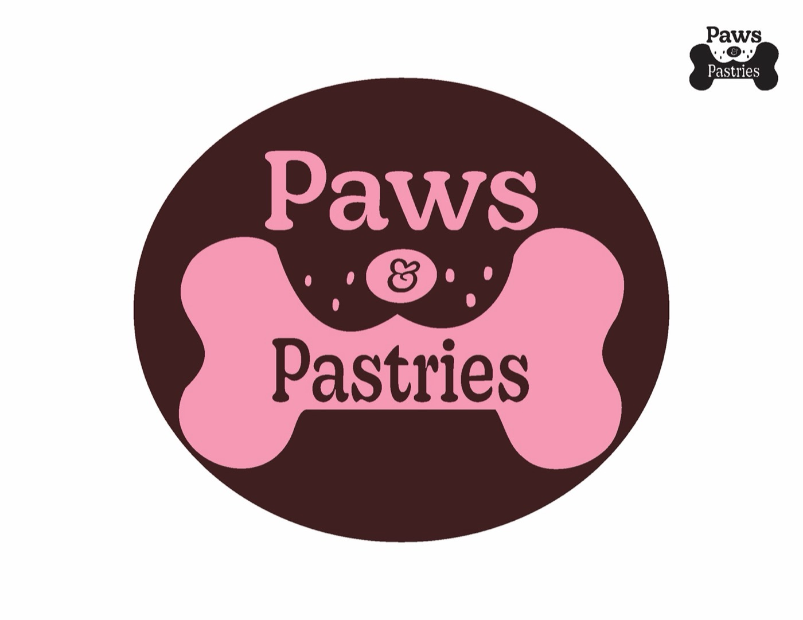
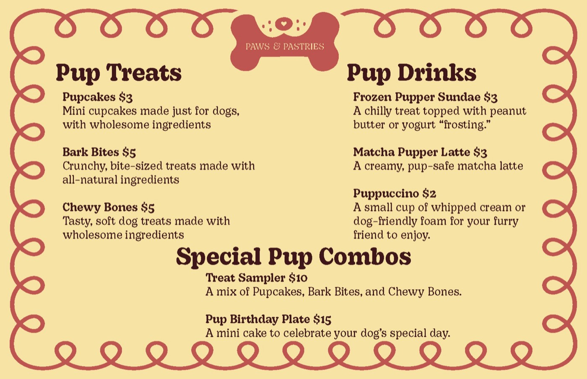

Case study · Brand identity · 2025
A brand for a dog-friendly café with treats for people and pups: name, logo, menus and a 24 × 36 in poster.
My role
Brand strategy, logo, type system, menus and poster
Timeline
7 weeks · Fall 2025
Course
Graphic Design 2: Making Meaning, with Joe Quackenbush
Tools
Figma, Illustrator, Adobe Suite
The idea
Mind maps around food memories led to a brand trueline, customer and employee personas and two moodboards. From there, the name and a warm, playful direction took shape.

Weeks 2–3
From 100 quick marks to the ten strongest, redrawn in Illustrator.

Week 4
One final mark in horizontal and stacked versions, tested in positive and negative.

Week 5
A type system and patterns drawn from the logo’s shapes, set in black and white first.
Process
Week 1
Mind maps, trueline, personas and two moodboards.
Week 2
100 logo marks and a type run of the name.
Week 3
Ten marks drawn in Illustrator and tested at every size.
Weeks 4–5
Lockups, menus, patterns and graphic elements.
Weeks 6–7
A 24 × 36 in poster and physical menus.


Outcome
“Move past first-thought solutions.”
A complete brand system, from the first mind map to menus you can hold, presented as one visual story.
Next project
Splash Zone →